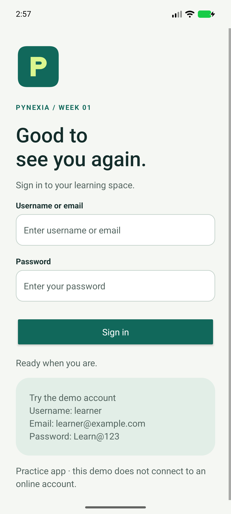
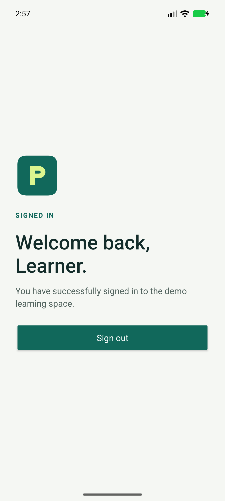

Native Android · Java + XML
Simple Login
A simple path from form to home.
A native Android login exercise with required-field feedback, fixed demo credential checks, explicit Intent navigation and sign out.
Project showcase · Android 8.0+ · Debug build for assessment.
This page is not an Android emulator.

01 / Implementation
What the exercise demonstrates
Built around the assignment's Android UI, input and navigation requirements.
Read the bilingual implementation report (PDF)Form and feedback
EditText fields accept username/email and password. Blank fields show errors; incorrect credentials display feedback.
Credential validation
Public demo username: learner. Alternative email: learner@example.com. Password: Learn@123. Username/email ignores case and surrounding spaces; password matches exactly.
Navigation and sign out
An explicit Intent opens HomeActivity. Sign out clears the navigation stack and returns to empty input fields.
02 / In the app
Real screens. Tested flows.
Captured from the native application running on the test emulator. Select an image to see it at full resolution.



03 / Try it
A short review walkthrough
- Submit empty fields, then incorrect credentials, to check feedback.
- Sign in using learner and Learn@123.
- Sign out; confirm the fields are empty and Back does not reopen the authenticated home.
- Repeat using learner@example.com and the same password.
Build and run from source
Open the repository root in Android Studio. Install SDK 35 / Build Tools 35.0.0, select JDK 17 or 21, sync Gradle and run the login module. Initial sync needs internet.
Verification / 25 Oct 2026
Checks with documented limits
Two JVM tests cover credential rules. One device test exercises empty/incorrect fields, login by username and email, navigation and sign out.
2 JVM tests and 1 device tests passed. Lint: zero errors, 5 warnings retained without suppression.
Pixel 8 emulator, Android 17 / API 37 (37.1 image), x86_64. No physical-device or API 26 test run. The APK signature was verified.
Inspect verification reportsشرح التمرين
يعرض التمرين نموذج تسجيل دخول يتحقق من الحقول الفارغة ومن بيانات حساب تجريبي ثابت. عند نجاح التحقق ينتقل إلى الصفحة الرئيسية، وعند تسجيل الخروج يمسح مسار التنقل ويعيد النموذج فارغًا. لا توجد مصادقة على خادم أو جلسة دخول دائمة.
للتجربة: استخدم اسم المستخدم وكلمة المرور المعروضين أدناه. اختبر أيضًا الحقول الفارغة والبيانات الخاطئة وتسجيل الخروج. الحسابات التي تنشئها في تمرين التسجيل مستقلة ولا تعمل في هذا التمرين.
04 / Submission kit
Everything for the project form
Copy the repository URL, hosted URL and implementation notes. Attach the ZIP (under 10 MB) or the PDF report. These are prepared values; this page does not submit to Pynexia.